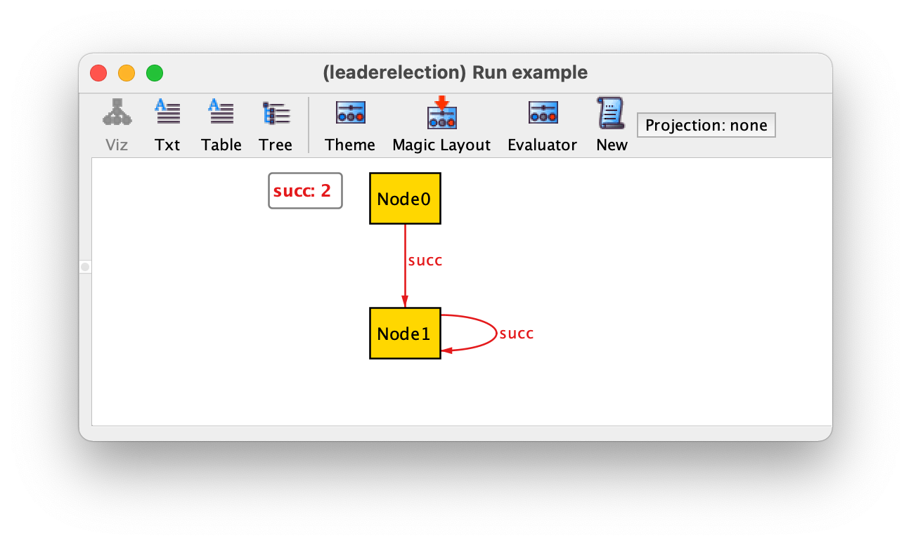
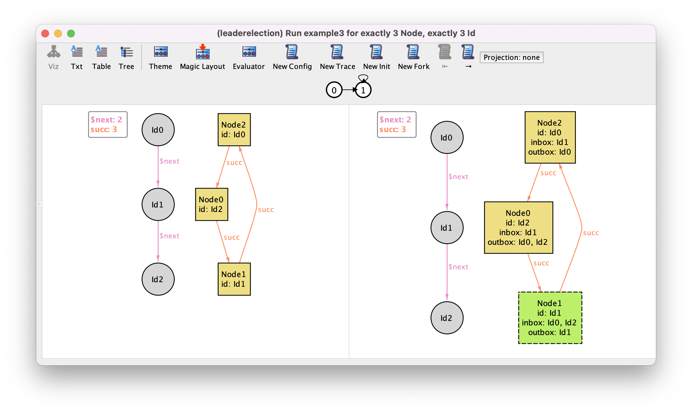
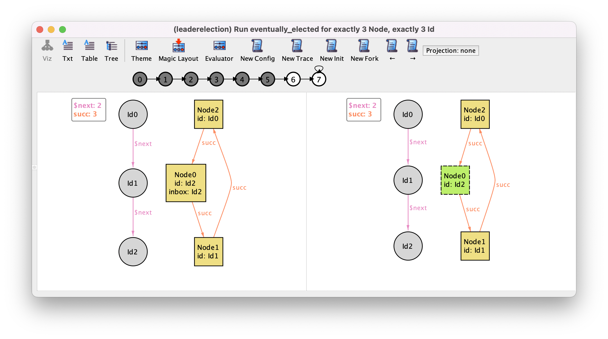
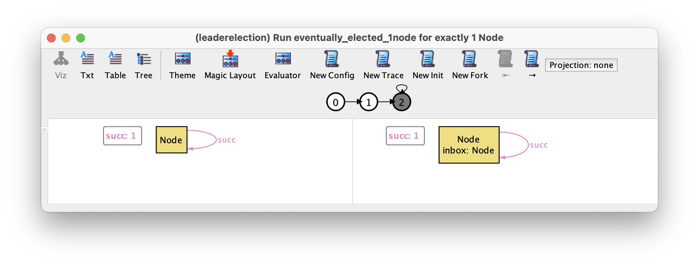
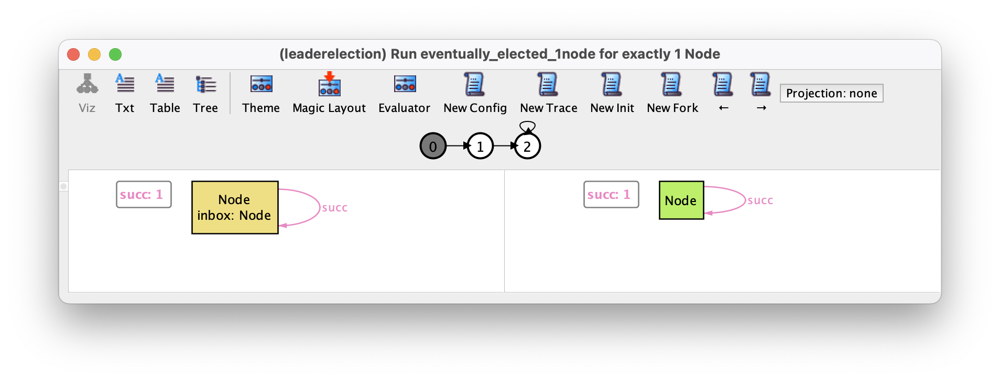
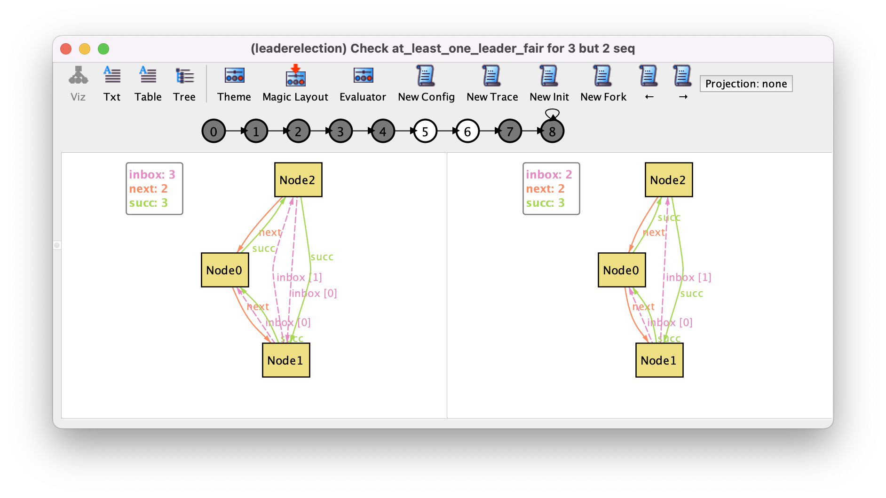

Protocol design¶
In this chapter we will explain how to specify and analyze a distributed protocol using Alloy. We will use a very simple example of a leader election protocol. The aim of a leader election protocol is to designate one node in a network as the organizer or leader of some distributed task. Nodes are initially unaware of which node will play that role, but after running the protocol all nodes should recognize the same node as leader. Many leader election protocols exist: here we will use a well-known version that can be used to elect a leader in a network of nodes organized in a ring, and where nodes also have unique comparable identifiers.
This protocol was proposed by Chang and Roberts [CACM79] and roughly operates as follows: the goal is to elect as leader the node with the highest identifier; each node starts by sending its own identifier to its successor in the ring; upon receiving an identifier, a node only forwards it if it is higher than its own; a node receiving back its own identifier designates itself as leader; finally the leader broadcasts its newly found role to the network. In our specification we will start by omitting this second last phase of the protocol and will only be concerned with the fundamental property of a leader election protocol: eventually exactly one node will designate itself as the leader.
Specifying the network configuration¶
When designing a distributed protocol, we should start by specifying the network configurations in which it is supposed to operate. In this case, the protocol operates in a ring network of nodes with unique identifiers. Notice that many network configurations satisfy this requirement: we could have rings of different size, and for the same size, different assignments of the unique identifiers to the nodes (the relevant fact here is the relative order in which the identifiers appear in the network). The verification of the expected properties of the protocol should take into account all possible different configurations (up to the specified bound on the ring size). The network configuration, although arbitrary, does not change during the execution of the protocol. As such, it will be specified with immutable signatures and fields.
Unlike some formal specification languages, Alloy has no pre-defined notion of process or node. These have to be explicitly specified, by declaring a signature. Since the network of nodes forms a ring, a binary relation that associates each node with its immediate successor in the ring should also be declared.
sig Node {
succ : one Node
}
Recall that binary relations should be declared as fields inside the
domain signature. In the declaration of field succ the
multiplicity one is used to ensure that each node has exactly
one successor in the ring. As usual in Alloy, we can immediately start
validating our specification by inspecting possible instances generated using a
run command.
run example {}
By iterating over the returned instances with New we could get the following instance, which is of course not a valid ring.
In addition to requiring each node to have exactly one successor, a simple way to ensure that a network forms a ring is to require that
every node is reachable from any other node. Given a node n,
to determine the set of nodes reachable from n via relation
succ we can use expression
n.^succ. This expression makes use of the composition (.) and transitive closure (^) operators already presented in the Structural modeling chapter. The constraint that succ forms a ring can thus be specified in a fact as follows.
fact ring {
// succ forms a ring
all n, m : Node | m in n.^succ
}
An alternative specification of fact ring is to require that the set of all
nodes (denoted by Node) is reachable from every node.
fact ring {
// succ forms a ring
all n : Node | Node in n.^succ
}
If we now iterate over all instances returned by command example we will get the 3 possible rings with up to 3 nodes and a configuration without any node, which is also allowed by our specification. The limit of 3 is due to the implicit command scope of 3 atoms per top-level signature. As an example we show the ring with 3 nodes.
To enforce that we have at least one node that can be elected we can add the following fact.
fact some_node {
// at least one node
some Node
}
Besides being organized in a ring, nodes must also have unique identifiers. Since we are going to need to compare identifiers, one possibility would be to just use integers to represent them. However, besides being totally ordered, integers carry additional semantics that is not necessary here. In particular, integers support arithmetic operations that will not be required in this example. When developing a formal specification it is good practice to be as abstract as possible and use the simplest structure that fulfills our needs. Also, the analysis of Alloy specifications with integers has some subtleties which makes it better to avoid, unless strictly necessary. As such, we will introduce a signature Id, to denote identifiers, and declare that this signature is totally ordered using a call to module util/ordering at the top of the file. Doing so implicitly extends the model with a binary relation next that given an identifier will yield the next identifier in the total order, two singleton signatures to denote the first and last identifiers of the order, and a binary predicate gt to compare if the first argument is greater than the second. All identifiers but one (the last) have a next.
open util/ordering[Id]
sig Id {}
Having our identifiers totally ordered, we can now declare a field id inside signature Node, to associate each node with its identifier.
sig Node {
succ : one Node,
id : one Id
}
To ensure that identifiers are unique it suffices to require id to be injective, which can be done as follows.
fact unique_ids {
// ids are unique
all i : Id | lone id.i
}
If we can now create a new example3 command to ask for all configurations with exactly 3 nodes and 3 identifiers, as follows.
run example3 {} for exactly 3 Node, exactly 3 Id
Setting an exact scope over identifiers is actually redundant because
util/ordering always imposes an exact scope. If we iterate over all instances
with New, we will get the two only (truly) different configurations
with this scope: one where the identifiers increase as we move forward in the
ring, and another where they decrease. The latter is depicted below (notice the
next, prev, first and last elements introduced by util/ordering).
This illustrates the power of Alloy’s symmetry breaking, which in this case
prevents the return of any other instance (that necessarily would be isomorphic
to one of these two).
Alloy model
Download and explore the files relevant for the model at this point of the book.
Further reading
ordering moduleLearn more about the predefined module that we have used to impose a total order on the identifiers.
Further reading
Learn what are the caveats of using integers and how to properly address them in Alloy.
Specifying the protocol dynamics¶
The coordination between the different nodes in this distributed protocol, like in many others, is achieved by means of message passing. Again, likewise for nodes, Alloy has no special support for message passing, so all the relevant concepts have to be specified from scratch. In this phase of the protocol messages are just node identifiers, so there is no need to add a signature to model those, and we can use signature Id directly to represent messages. To capture the incoming and outgoing messages we can declare mutable binary fields inside signature Node, to associate each node with the set of identifiers it has received or that need to be sent, respectively. Using sets for the mailboxes is an abstraction that allows us to verify that the protocol is correct even if messages are transmitted out of order. In this protocol the same message is never sent twice by each node, so we also don’t need to account for multiple copies of the same message.
As we have seen in the Behavioral modeling chapter, to declare a mutable field the keyword var should be used.
sig Node {
succ : one Node,
id : one Id,
var inbox : set Id,
var outbox : set Id
}
We also need to distinguish the nodes that have been elected as leaders. To do so we can declare a mutable signature Elected that is a subset of Node.
var sig Elected in Node {}
Note that, on purpose, we did not impose a multiplicity lone in this declaration, because that constraint, that at most one node is elected leader, is one of the key assertions we will want to verify to be a consequence of the protocol dynamics, and thus should not be imposed as an assumption upfront.
If we now run the example3 command we might get the following instance.

As we have seen in the Behavioral modeling chapter, the interface of the visualizer is different when we have mutable elements: it now shows two states of a trace side-by-side, there are several new instance exploration buttons in the toolbar, and a depiction of a path just below those. In this case we have a trace where the same state 0 repeats itself indefinitely, something that is possible since so far we added no restrictions that constrain the behavior of the protocol. We recall that in the depiction of the states, by default, immutable sets and fields (the configuration of the protocol) are shown with solid lines, while mutable ones are shown with dashed lines.
To simplify the visualization, we can configure the theme so that node identifiers, the inbox, and the outbox are shown as node attributes, and change the color of elected nodes to green. Since the elected nodes can now be easily distinguished by color we can also hide the respective textual label. As for the totally ordered identifiers, we will just show the next relation. The result of this customization will be the following.
Something that is clearly wrong in this execution is that in the initial state nodes already have identifiers in their inboxes and outboxes, and some of them are already elected. To restrict the initial value of these mutable fields we can add the following fact.
fact init {
// initially inbox and outbox are empty
no inbox and no outbox
// initially there are no elected nodes
no Elected
}
Since this fact has no temporal connectives
it applies to the initial state of the system. Rerunning the
example3 command now yields instances such as the following, where the
systems remains indefinitely in a valid initial state.
We can explore additional instances by using the instance exploration buttons in the toolbar. For example, the New Fork button asks the Analyzer for a different trace with the same behavior up to the left-hand side state, but a different outcome of the current transition (a different right-hand side state). By pressing this button we may get the following.
This trace displays a behavior that should not be allowed in a correct execution of the protocol: in the second state all of a sudden several identifiers appeared in the inbox and outbox of Node1. Moreover, this node was also randomly designated as leader. So far this is allowed because we added no constraints to our specification that restrict how the system can transition from one state to another. If there are no constraints then any transition is possible.
As already explained in chapter Behavioral modeling, the simplest way to constrain the valid transitions is to consider all the possible events that can occur in the system, and for each event specify when it can occur (its guard) and what is its effect on the mutable relations. In our protocol we can distinguish three possible events:
a node initiates the execution by sending its own identifier to the next node;
a node reads and processes an identifier in its inbox, decides whether it should be propagated or discarded and, if it is its own identifier, elects itself as leader;
the network sends one message in the outbox of a node to the inbox of the next one.
Alloy has no special keywords to declare events. A common approach is to declare a predicate for each event, that specifies its guard and effect, and add a constraint enforcing that at each possible state only one of those predicates can hold. Event predicates can also be parametrized, and in our specification they will be parametrized the node where the event occurs.
Let’s begin by specifying the initiate event. For each event we should
always start by specifying what is its guard, a constraint on the
current (or pre-) state that determines when can the event occur. To simplify our
specification, for the moment, we will assume that a node is free to initiate (or
re-initiate) the protocol whenever it wants, so in this case there will
be no guard, meaning the event is always possible. Then we should
specify the effect of the event on all mutable relations of the specification:
note that if nothing is said about a particular mutable relation then
its value can change freely when the event occurs. A special effect is
forcing the value of a mutable relation to not change at all,
something known as a frame condition. For example in this event we
will have two frame conditions, since it does not change the value of
inbox nor Elected. To specify that a relation does not
change with a logic formula we need to refer to its value in the next
(or post-) state. In Alloy the value of a relation (or relational
expression) in the next state is accessed by appending a prime. So, to
state that, for example, the relation inbox does not change we
could add the constraint inbox' = inbox. Likewise for
Elected. So far, the specification of event initiate looks as
follows.
pred initiate_no_effect [n : Node] {
// node n initiates the protocol
inbox' = inbox // frame condition on inbox
Elected' = Elected // frame condition on Elected
}
We now need to specify the effect on relation outbox. We can
start by specifying its effect on the outbox of the initiating
node. Expression n.outbox denotes the set of identifiers in
the outbox of node n in the current state. The effect
of this event on this set is to add n’s own identifier, which
can be specified by n.outbox' = n.outbox + n.id. Here we used
the set union operator + to add the singleton set n.id
to n.outbox. Note that requiring n.id to be present in
the outbox in the next state, which could be specified by n.id
in n.outbox', is not sufficient, as it would allow identifiers other than n.id
to be freely removed or added from n.outbox. Having specified
the effect on the outbox of n we now need to specify the
effect on the outbox of all other nodes. Again, if nothing is
said about those, they will be allowed to vary freely. Of course this
event should not modify the outboxes of other nodes, something we
could specify with constraint all m : Node - n | m.outbox' =
m.outbox, that quantifies over all nodes except the initiating one. The final specification of our event looks as follows.
pred initiate_no_guard [n : Node] {
// node n initiates the protocol
n.outbox' = n.outbox + n.id // effect on n.outbox
all m : Node - n | m.outbox' = m.outbox // effect on the outboxes of other nodes
inbox' = inbox // frame condition on inbox
Elected' = Elected // frame condition on Elected
}
To validate our first event we can impose a restriction stating that,
for the moment, this is the only event that can occur, and inspect the
possible instances to see if the system behaves as expected. To
specify such a restriction we need the temporal logic operator
always to enforce a formula to be true at all
possible states. In particular, to enforce that, at every possible
state, one of the nodes initiates the protocol, the following
fact can be added to the specification.
fact always_initiate {
// possible events
always (some n : Node | initiate_no_guard[n])
}
Running command example3 yields the following trace, where
Node2 initiates the protocol and then nothing else happens.
On first glance, this may seem like an invalid trace, given that we
required that at every state one node initiates the protocol. However,
if we look closely at our specification of event initiate we
can see that it also holds true in a state where a node already has
its own identifier in the outbox, which
will remain in the outbox. Our specification did not had a guard forbidding
this occurrence of the event, and the effect n.outbox' =
n.outbox + n.id is also true if n.id is already in
n.outbox and in n.outbox'.
To address this issue we could add a guard like n.id not in n.outbox to predicate initiate_no_guard. However, this
only forbids a node from initiating the protocol if it’s own
identifier is in its outbox at that particular moment. This means that, once we
include an event to send messages and this identifier leaves the
outbox, a node will be able to re-initiate the protocol. In principle, this does not
pose any problem concerning the correctness of this particular
protocol, but if we really wanted each node to initiate the protocol
only once we would need to strengthen this guard.
One possibility would be to add a field to record at which phase of the protocol execution each node is in, and allow this event only when a node is in an “uninitiated” phase. This would be the common approach in most formal specification languages. However, with Alloy we have a more direct alternative. Since there is no special language to specify events and they are specified by arbitrary logic formulas, we are free to use temporal operators to specify guards or effects. By contrast, in most formal specification languages we can only specify the relation between the pre- and post-state.
In this case we could, for example, use the temporal operator
historically, that checks if something was always true in the
past up to the current state, to only allow initiate to occur
if the node’s identifier was never in its outbox. The specification of
our event would look as follows.
pred initiate [n : Node] {
// node n initiates the protocol
historically n.id not in n.outbox // guard
n.outbox' = n.outbox + n.id // effect on n.outbox
all m : Node - n | m.outbox' = m.outbox // effect on the outboxes of other nodes
inbox' = inbox // frame condition on inbox
Elected' = Elected // frame condition on Elected
}
Unfortunately, after adding this guard our command will return no trace, meaning there are no behaviors that satisfy our constraints. This happens because we are currently not allowing messages to be sent or read, so after all nodes have initiated the protocol nothing else is allowed to happen by our specification, and it is impossible to obtain a valid trace. Recall that traces are infinite sequences of states. A simple way to solve this issue is to add an event allowing the system to stutter, that is to do nothing (keeping the value of all relations unchanged). Stuttering can also be understood as an event specifying something else that is occurring on the environment outside the scope of our specification, and in general it is a good idea to add such stuttering events. In this case, a predicate to specify a stuttering event can be specified as follows.
pred stutter {
// no node acts
outbox' = outbox
inbox' = inbox
Elected' = Elected
}
To allow this event we need to change the above fact that restricts the possible behaviors.
fact stutter_or_initiate {
// possible events
always (stutter or some n : Node | initiate[n])
}
Running command example3 returns a trace where nothing happens
in our system, something that is now allowed. If we press
New Fork we might get a trace such as the previously
depicted, where Node2 initiates the protocol and then nothing
else happens. If we move to the next state by pressing →,
and fork again with New Fork, we might get the following
trace where Node0 initiates the protocol after Node2.
By exploring a bit more the possible traces we can get some confidence that event initiate is well specified.
Let us now specify the send event. In this event we could have as parameters the node
n from where the message will be sent and the message
i that will be sent (an identifier). The guard of this event
should require i to be in the outbox of n. The
effect will be to remove i from the outbox of
n, and add it to the inbox of the next node n.succ. All
other inboxes and outboxes should keep their value, as well as the
Elected set. The specification of this event would be the following.
pred send [n : Node, i : Id] {
// i is sent from node n to its successor
i in n.outbox // guard
n.outbox' = n.outbox - i // effect on n.outbox
all m : Node - n | m.outbox' = m.outbox // effect on the outboxes of other nodes
n.succ.inbox' = n.succ.inbox + i // effect on n.succ.inbox
all m : Node - n.succ | m.inbox' = m.inbox // effect on the inboxes of other nodes
Elected' = Elected // frame condition on Elected
}
For event process message, again we will have as parameters the node
n and the message i to be
read and processed. The guard should require that i is in the
inbox of n. The effect on inbox is obvious:
i should be removed from the inbox of n and
all other inboxes should keep their value. The effect on the
outbox of n depends on whether i is
greater than n.id: if so, i should be added to the
outbox, to be later propagated along the ring; if not, it
should not be propagated, meaning the outbox of n will
keep its value. To write such conditional outcome we could use the
logical operator implies together with an else:
C implies A else B is the same as (C and A) or (not C
and B), but the former is easier to understand. The event has no
effect on the outboxes of other nodes, which should all keep their
value. The same conditional outcome applies to Elected: if the
received i is equal to the n’s own identifier, then
n should be included in Elected; otherwise Elected
keeps its value. The full specification of process is as
follows.
pred process [n : Node, i : Id] {
// i is read and processed by node n
i in n.inbox // guard
n.inbox' = n.inbox - i // effect on n.inbox
all m : Node - n | m.inbox' = m.inbox // effect on the inboxes of other nodes
gt[i, n.id] implies n.outbox' = n.outbox + i // effect on n.outbox
else n.outbox' = n.outbox
all m : Node - n | m.outbox' = m.outbox // effect on the outboxes of other nodes
i = n.id implies Elected' = Elected + n // effect on Elected
else Elected' = Elected
}
We should now add these two events to the fact that constraints the valid behaviors of our system. We will also factorize all node events into a separate predicate, to later simplify the specification of fairness conditions.
pred node_acts [n : Node] {
initiate[n] or
(some i : Id | send[n, i]) or
(some i : Id | process[n, i])
}
fact events {
// possible events
always (stutter or some n : Node | node_acts[n])
}
Before proceeding to the verification of the expected properties of
the protocol, we should play around with the different instance
exploration buttons to explore different execution scenarios and
validate the specification of our events. An alternative would be to
ask for specific scenarios directly in a run command. For
example, we could change command example to ask directly for a
scenario where some node will be elected. To do so we need to use the
temporal operator eventually, which checks if a formula is
valid at some point in the future (including the present state). Our
command would look as follows.
run eventually_elected {
eventually some Elected
} for exactly 3 Node, exactly 3 Id
Running this command will return a trace with 8 states where the highest
identifier is passed around until the respective node gets elected. This is the
shortest trace where a leader can be elected in a ring with 3 nodes,
corresponding to one initiate event followed by 3 interleaved send and process
message events. With the bounded model-checking engine that is used by default,
the Analyzer guarantees that the shortest traces that satisfy (or refute) a
property are returned first. The first transition of this trace is the
following, where the node with the highest identifier (Id2) initiates
the protocol.
In the last transition, that can be focused by pressing → 6 times or by directly clicking the state numbered 6 in the trace depiction, this node reads back its own identifier that was passed around in the ring and elects himself as leader.
Alloy model
Download and explore the files relevant for the model at this point of the book.
Further reading
Learn how to specify richer run commands to search for specific scenarios, where a particular sequence of events occurred.
Further reading
Learn a simple Alloy idiom that can be used to depict which events occurred in each transition of a trace.
Verifying the expected properties¶
The key property of our protocol is that exactly one node will become leader. We can break this property into three simpler ones:
there will never be more than one leader;
every leader remains leader;
eventually there will be at least one leader.
These properties are of very different nature: the first two are a safety properties, forbidding some (undesired) behavior of the system, while the latter is a liveness property, forcing some (desirable) behavior of the system. The analysis of safety properties is usually simpler than the analysis of liveness properties. To find a counter-example for a safety property it suffices to search for a finite sequence of states that leads to a (bad) state (in the case of the first property, one state where there are two or more leaders), and it is irrelevant what happens afterwards, as any continuation of this finite sequence will still be a counter-example. On the other hand, to find a counter-example for a liveness property it is necessary to search for a complete infinite trace where the expected behavior definitely never happened (in the case of the last property, one trace where a leader is never elected). Moreover, it will be necessary to impose additional fairness conditions when verifying liveness properties, in particular to forbid unreasonable counter-examples where at some point the system stutters forever and the nodes never execute an enabled event.
Let us start by verifying the first (safety) property. Recall that
properties that are expected to hold can be written in named
assertions (declared with keyword assert) and then verified
with check commands. This safety property is a very simple
example of an invariant, a property that requires something to be
be true in all states of all possible traces. In Alloy, invariants can
be specified using the temporal operator always. In each state, to check that
there is at most one leader in set Elected we could use
the keyword lone. This invariant could thus
be specified as follows.
assert at_most_one_leader {
always (lone Elected)
}
To check this assertion we could define the following command.
check at_most_one_leader
This protocol is known to be correct, so, as expected, running this command returns no counter-example. Recall that the default scope on top-level signatures is 3, so this command actually verifies that the property holds for all rings with up to three nodes. This Alloy ability of model checking a property at once for all possible configurations of a system is not possible in some competing model checkers, where we are forced to specify the specific configuration on which we want to verify a protocol. That is rather cumbersome, since with a reasonable scope there can be many different configurations and its difficult to even enumerate them manually. Also, we could easily miss a bug in a specific configuration.
As mentioned in chapter Behavioral modeling, by default, verification of temporal properties in Alloy is done with a technique known as bounded model checking, meaning that the search for counter-examples will only consider a given maximum number of different transitions before the system starts exhibiting a repeated behavior. By default this maximum number is 10. To increase our confidence in the result of the analysis we could, for example, check this property for all rings with up to 4 nodes and consider up to 20 different transitions (or steps). To do so we could change the scope of the command as follows.
check at_most_one_leader for 4 but 20 steps
This commands sets the default scope on signatures to 4 but also
changes the scope on transitions to 20 using keyword
steps. Again, as expected, no counter-example is returned, but
the analysis now takes considerably longer, as there are many more
network configurations and states to explore.
It is also possible to check a temporal property with complete model
checking if a compatible solver is selected. This will consider an arbitrary number of
transitions, but still with the signatures bounded by a maximum
scope. To do so, a special scope on steps is needed
to trigger unbounded temporal analysis.
check at_most_one_leader for 4 but 1.. steps
The second expected property is another example of a safety property, this time requiring a nested always operator to be specified.
assert leader_stays_leader {
always (all n : Elected | always n in Elected)
}
check leader_stays_leader
Again this assertion is true, as expected. Note that the universal quantification on Elected could not be moved outside the first always, because Elected is a mutable subset signature, and if used outside any temporal connective it will be evaluated in the initial state, where it is empty. Of course, that is not what we want. Here we check that Elected never decreases in content, that is, at every state any node that it contains will remain in Elected for ever. Combined with at_most_one_leader this ensures that there can never exist two different leaders.
The third expected property is a very simple example of a liveness
requirement, namely one that requires something to hold at least in
one state of every trace. In this case we want to make sure that at least one node will be elected. Simple liveness properties such as this one can many times be specified directly
with the temporal connective eventually. Inside this temporal
connective, again a very simple cardinality check on Elected
suffices, this time with keyword some.
assert at_least_one_leader {
eventually (some Elected)
}
The following command can be used to check this property with bounded model checking and the default scopes.
check at_least_one_leader
We recommend that you start by
verifying specifications with bounded model checking, because for small scopes on steps it is
usually much faster than the unbounded counterpart, and most
counter-examples tend to require only a handful of transitions. Once
you have a design where no counter-example is returned with bounded
model checking, you can increase your confidence on the analysis by using
unbounded model checking. As hinted above, running this command immediately returns a
counter-example where the system stutters forever, and obviously no
leader is elected. This counter-example can be replicated in trivial configurations, for example the following with a single node.
This behavior is currently allowed because we added a stutter event that captures events external to our system. At the moment this event can occur indefinitely, which is a bit unrealistic or unfair to the system under analysis: in particular, if at some point one node is continuously ready to execute one of its events (the node is continuously enabled), then it should eventually do something. For example, in our protocol, a trace where at some point a message is in the inbox of a node but is never processed is unfair to that node.
To specify fairness properties that exclude such unreasonable executions, we first need to understand two
well-known combinations of the always and eventually
temporal operators:
eventually always Pholds in a system if all traces reach a state wherePbecomes valid indefinitely.always eventually Pholds in a system if in every state of every tracePis later valid, which means thatPis true infinitely often.
To specify that a node is at some point continuously enabled we can use the
first combination. Most of the times the enabled condition for a node is exactly
the same as the disjunction of the guards of its events. In our case a node
n is enabled if it has never initiated or has some message in the inbox
or in the outbox. To specify that a continuously enabled event eventually occurs
(after the point it becomes enabled) the second combination of operators
presented above can be used. Note that a continuously enabled event would still
be (continuously) enabled after the required occurrence of the event, which
means that the event should occur again and again, or infinitely often. So, the
desired fairness condition can be specified as follows.
pred initiate_enabled [n : Node] {
historically n.id not in n.outbox
}
pred process_enabled [n : Node, i : Id] {
some n.inbox
}
pred send_enabled [n : Node, i : Id] {
some n.outbox
}
pred node_enabled [n : Node] {
initiate_enabled[n] or
(some i : Id | process_enabled[n, i]) or
(some i : Id | send_enabled[n, i])
}
pred fairness {
all n : Node {
eventually always node_enabled[n]
implies
always eventually node_acts[n]
}
}
Here we specified separately the enabled conditions for each of the events. Technically, this fairness condition is known as weak fairness, as a node is only required to act if is continuously enabled. Often this suffices to verify most liveness properties. However, sometimes we may need strong fairness constraints, requiring that some event occurs when it becomes recurrently enabled (infinitely often, but not necessarily continuously).
If we change the at_least_one_leader assertion to assume
the above fairness condition, no counter-example will be returned even with increased
scopes, as expected.
assert at_least_one_leader_fair {
fairness implies eventually (some Elected)
}
check at_least_one_leader_fair
Alloy model
Download and explore the files relevant for the model at this point of the book.
Further reading
Learn how to specify different fairness conditions and the impact they have on the analysis.
Further reading
Read about the full syntax and semantics of the temporal logic supported in Alloy.
Making the specification more abstract¶
There are several ways in which we can make our specification of this protocol more abstract, and potentially speed up its analysis. For example, we actually do not need to model the identifiers explicitly: we can use each node atom name as its own identifier. To model this, we could impose the total order on Node itself, and get rid of signature Id and field id. Also, messages are now the node atoms, and the declaration of inbox and outbox should change accordingly. However, imposing a total order with util/ordering will make the scope on Node exact, which means that for a given scope we would only verify all configurations with that exact number of nodes. This is undesirable, because we could easily miss bugs for smaller configurations. As such, instead of using util/ordering we will directly impose a total order on the nodes, by explicitly adding a next relation, the first and last nodes, and the corresponding fact.
sig Node {
next : lone Node,
succ : one Node,
var inbox : set Node,
var outbox : set Node
}
one sig first, last in Node {}
fact ordering {
no next.first and no last.next
Node-first in first.^next
}
Actually, in our first model with a separate Id signature and using util/ordering we were verifying some redundant configurations that were symmetric for this protocol. For example, with the default scope of 3, the scope of Id was exactly 3, meaning that even if we had less than 3 nodes, there would still exist 3 identifiers. This means that, for example, for a network of 2 nodes we were analyzing three configurations: one where the identifiers were consecutive starting in the first identifier, one where the identifiers were consecutive starting in the second identifier, and one where the identifiers differed in two units. For this protocol, where we just need to check which identifier is greater, all these configurations are equivalent, and thus it would be unnecessary to check them all. In this new version without explicit identifiers, we no longer have this issue, and for a scope of 3 only 4 truly different configurations will be analyzed: one network with one node, one with two nodes, and two networks with three nodes, one where next is in the same order of succ and one where it is in reverse order.
Of course, after removing Id we have to slightly change the specification of our event predicates and the assertions. For example, event process can now be specified as follows.
pred process [n : Node, i : Node] {
// i is read and processed by node n
i in n.inbox // guard
n.inbox' = n.inbox - i // effect on n.inbox
all m : Node - n | m.inbox' = m.inbox // effect on the inboxes of other nodes
i in n.^next implies n.outbox' = n.outbox + i // effect on n.outbox
else n.outbox' = n.outbox
all m : Node - n | m.outbox' = m.outbox // effect on the outboxes of other nodes
i = n implies Elected' = Elected + n // effect on Elected
else Elected' = Elected
}
Note that since we now don’t have the gt predicate available we directly compared nodes using the next relation.
The eventually_elected command now only needs to specify a scope for Node.
run eventually_elected {
eventually some Elected
} for exactly 3 Node
Running this command yields the following instance (with the theme already customized), and it is now more clear if the ring follows the increasing order of the identifiers (as happens here), or the other way around. Notice that without using util/ordering, the node identifiers are no longer representative of the total order (in the trace below, Node2 is the first element of the total order, and Node1 the last).
Another signature we can remove is Elected, since actually we can infer which node has been elected by looking at what happened in the past: if at some point in the past a node had its identifier in the inbox and processed it, then it necessarily became a leader. Instead of declaring a subset signature we can define Elected as a derived set of nodes using a function without parameters.
fun Elected : set Node {
{ n : Node | once (before n in n.inbox and n not in n.inbox) }
}
Here, the set of elected nodes at each state is defined by comprehension. Note
the usage of the once and before past operators to check if
the desired transition happened in the past. We can now simplify the
specification of all three events, removing the effects on Elected. For
example, event process can now be specified as follows.
pred process [n : Node, i : Node] {
// i is read and processed by node n
i in n.inbox // guard
n.inbox' = n.inbox - i // effect on n.inbox
all m : Node - n | m.inbox' = m.inbox // effect on the inboxes of other nodes
i in n.^next implies n.outbox' = n.outbox + i // effect on n.outbox
else n.outbox' = n.outbox
all m : Node - n | m.outbox' = m.outbox // effect on the outboxes of other nodes
}
Another abstraction could be to remove the outbox and incorporate the sending of a message in the initiate and process events. This is a reasonable simplification in this protocol, since each node only communicates with the successor node, and out of order message delivery is already being modeled by having the inboxes contain sets of messages. The declaration of signature Node becomes the following.
sig Node {
next : lone Node,
succ : one Node,
var inbox : set Node
}
The specification of event initiate should be changed to directly add the node identifier to the inbox of the successor node.
pred initiate [n : Node] {
// node n initiates the protocol
historically n not in n.succ.inbox // guard
n.succ.inbox' = n.succ.inbox + n // effect on n.succ.inbox
all m : Node - n.succ | m.inbox' = m.inbox // effect on the outboxes of other nodes
}
Finally, the specification of process should also be changed accordingly.
pred process [n : Node, i : Node] {
// i is read and processed by node n
i in n.inbox // guard
n.inbox' = n.inbox - i // effect on n.inbox
i in n.^next implies n.succ.inbox' = n.succ.inbox + i // effect on n.succ.inbox
else n.succ.inbox' = n.succ.inbox
all m : Node - n - n.succ | m.inbox' = m.inbox // effect on the inboxes of other nodes
}
After removing event send from predicate node_acts, we can run the eventually_elected command and see that it is now possible
to elect a leader in a ring with three nodes with almost half the transitions.
With the same scope on the steps we can now check much longer behaviors
with roughly the same efficiency. If we check our three assertions they are all
still valid, as expected.
However, this specification is actually not correct! If we run the following command to get an example of electing a leader in a ring with one node, we will get no instances.
run eventually_elected_1node {
eventually some Elected
} for exactly 1 Node
The problem is in the specification of the effect of process on
n.succ.inbox. If the ring has a single node, both n and
n.succ are the same node, and the two conditions specifying the effect
on n.succ.inbox and on n.inbox contradict themselves, so the
process event cannot actually occur (is not truly enabled) even if its guard
is true in a state. This was the reason why checking the
at_least_one_leader_fair assertion did not produce a counter-example, because
the fairness condition now has the wrong enabledeness condition for this event. It
is very easy to make such subtle mistakes while specifying, and introduce
inconsistencies in our model, and to avoid them we should always exhaustively validate our
specification before checking our assertions. This is specially true for liveness properties. Ideally, we should have different
run commands to check the consistency of different scenarios, for
instance asking for examples where leaders are elected in rings of different
sizes. To fix the specification of process we could require the frame
condition on n.succ.inbox to only apply when n.succ is not n
itself.
pred process [n : Node, i : Node] {
// i is read and processed by node n
i in n.inbox // guard
n.inbox' = n.inbox - i // effect on n.inbox
i in n.^next implies n.succ.inbox' = n.succ.inbox + i // effect on n.succ.inbox
else n.succ != n implies n.succ.inbox' = n.succ.inbox
all m : Node - n - n.succ | m.inbox' = m.inbox // effect on the inboxes of other nodes
}
If we ask for a trace where a leader is elected in a ring with one node, we now get the expected outcome after two events.
 So far we have specified the effects of events in a point-wise style, stating the effect on different projections of the inbox separately. Using a point-free style, where we specify the effect on all inboxes at once, can many times considerably simplify the specification. Consider for example the point-free version of the initiate event.
pred initiate [n : Node] {
// node n initiates the protocol
historically n not in n.succ.inbox // guard
inbox' = inbox + n.succ->n // effect on inbox
}
Now we just specify in a single constraint that the binary relation inbox should have a new tuple in the next state, namely one where n was added to the inbox of n.succ.
For process specifying the effect on the all inbox in a single constraint is a bit more challenging, but could be done as follows.
pred process [n : Node, i : Node] {
// i is read and processed by node n
i in n.inbox // guard
inbox' = inbox - n->i + n.succ->(i & n.^next) // effect on inbox
}
In the next state, binary relation inbox should have one less tuple, corresponding to deleting i from the inbox of n, and, if i in n.^next one more tuple, corresponding to adding i to the inbox of n.succ. This last conditional addition was specified by always adding tuple n.succ->(i & n.^next) to inbox: note that expression i & n.^next is equal to i if i in n.^next or none otherwise, hence in the latter case no tuple will be added since the Cartesian product with an empty set is also an empty binary relation.
Alloy model
Download and explore the files relevant for the model at this point of the book.
Further reading
Learn about the different ways to specify effects and frame conditions of events. Here we used the point-free style to simplify the specifications.
Explicit messages as signatures¶
Up until now, we only specified the first phase of the leader election protocol. In a second phase, once a node identifies itself as the leader, it should propagate that information to all the other nodes to make sure that every node is aware of the elected leader. This second phase can begin while there are still messages from the first phase being exchanged. A message informing about the newly elected leader contains the payload exchanged in the first phase: a node identifier, in this case of the elected leader instead of candidate. Thus, we can no longer abstract messages by just exchanging identifiers between nodes, and must introduce a richer message type into our model to distinguish between the messages exchanged in the two phases of the protocol. In a programming language we would probably encode messages using a record, or struct type. In Alloy such records can to be encoded with signatures, but that causes some issues that will be discussed in this section.
We can easily extend our model to support different types of messages by introducing an abstract
static signature to represent them, and then extend it by the more specific
message types. Signature fields would represent the payload or data fields of the messages.
In our leader election protocol, we have two message types that happen to
contain the same payload – a node identifier – so we can define that
field at the top-level signature, which will be inherited by the specific
CandidateMsg and ElectedMsg. The payload is mandatory, so it is
assigned multiplicity one.
abstract sig Message {
payload : one Node
}
sig CandidateMsg, ElectedMsg extends Message {}
Then we need to adapt the inbox declaration to contain the new messages instead of just node identifiers.
sig Node {
next : lone Node,
succ : one Node,
var inbox : set Message
}
Next, we must adapt the event predicates to consider the new message types. Some of these
events (such as when a node initiates, or elects itself the leader) are expected
to ‘create’ new messages. This will expose a main difference between having true record-like data
structures and Alloy static signatures: with the latter, messages will in fact never
really be created, since all possible messages that can be sent in an execution already belong to signature Message in the initial state. The ‘creation’ of a new message will be specified by an existential quantification that searches for an atom inside Message with the required type and content. Predicate initiate, for instance, could be adapted in the
following way.
pred initiate [n : Node] {
// node n initiates the protocol
historically no CandidateMsg & payload.n & n.succ.inbox // guard
some m : CandidateMsg & payload.n | inbox' = inbox + n.succ->m // effect on inbox
}
The first difference to our previous specification is in the guard: rather than testing whether its own
identifier has ever been in the inbox of its successor, a node can now only initiate if
a candidate message with its identifier was never in that inbox. Note that for a node identifier n,
payload.n retrieves all messages with that identifier, which intersected with
CandidateMsg gives all candidate messages for node n (in the current model,
there may be multiple CandidateMsg atoms with the same payload). The second
difference, as we already mentioned, is the use of an existential quantification in the effect to pick a message of the
appropriate type and content to be added it to the successor’s inbox.
Rather than having an identifier as a parameter, the process event should now
consider a message. To ease the specification, we split the process event into
two different events specified in different predicates: processing a CandidateMsg message or processing an
ElectedMsg message. Predicate processCandidate becomes slightly more
complicated, since there are now three possible effects on the successor’s
inbox: as previously, a node receiving a candidate message may discard it (if the identifier in
the message is smaller than its own), or propagate it (if the identifier in the message is larger than its own). But now, when a node identifies itself as the leader (the identifier in the message is the same as its own), it must also send a new elected message informing other nodes that it become the leader. One possibility to specify this event is as follows.
pred processCandidate[n : Node, m : CandidateMsg] {
// candidate message m is read and processed by node n
m in n.inbox // guard
m.payload in n.^next implies inbox' = inbox - n->m + n.succ->m // effect on inbox
else m.payload in ^next.n implies inbox' = inbox - n->m
else some e : ElectedMsg & payload.n | inbox' = inbox - n->m + n.succ->e
}
Due to the need to send a different type of message in the last case, it is now more difficult to specify the effect in a single case, so we keep the three cases separate.
Predicate processElected is quite simple, just propagating the elected messages
unless it’s the elected leader receiving the message again, in which case it is discarded.
pred processElected[n : Node, m : ElectedMsg] {
// elected message m is read and processed by node n
m in n.inbox // guard
m.payload != n implies inbox' = inbox - n->m + n.succ->m // effect on inbox
else inbox' = inbox - n->m
}
Concerning Elected, we would now to consider a more interesting version, where we register for each node which other node it considers the leader, if any. As such, we will change Elected to return not the set of elected nodes, but a binary relation that for each node returns the leader it currently knows. A node gets to know who is the leader when it processes an elected message, so the set of leaders for each node is the payload of all previously processed messages of this type. We can define this relation by comprehension, using a let-expression to denote the set of elected messages in a node inbox.
fun Elected : Node -> Node {
{ n, i : Node |
let inbox_elected = payload.i & ElectedMsg & n.inbox |
once (before some inbox_elected and no inbox_elected) }
}
Lastly, we just have to update the fact that specifies what are the valid executions of the protocol.
pred node_acts [n : Node] {
initiate[n] or
(some m : CandidateMsg | processCandidate[n, m]) or
(some m : ElectedMsg | processElected[n, m])
}
fact events {
// possible events
always (stutter or some n : Node | node_acts[n])
}
Let us validate the new version of our protocol using the functionalities
provided by the Analyzer. Let us run our empty run command example just to
explore some possible traces. The first trace returned is one where there is a
single node and the system stutters forever (recall that bounded model checking
guarantees minimal trace prefix length). By hitting New Fork we
should be able to observe a different event, namely an initiate event.
However, depending on the selected solver, we may get the following message.
Let’s try to use the evaluator to debug the trace. Recall that the evaluator for
traces supports any formula and expression, and that this evaluation is always
performed on the focused state (the one at the left-hand side). We can start by
confirming that the system is simply stuttering by calling stutter at the
current state (in this case, this is still the initial one since we did not navigate in the
trace). We can also ask if stutter is happening after or even always. For all theses cases the
evaluator will answer true as expected. We can then ask the evaluator whether
there is some node for which the guard of the initiate predicate holds (a
formula with the past operator historically), or use comprehension to get all
nodes for which that guard holds. The evaluator will show us that it holds for
the existing node. So this must be a case where the guard is not necessarily
the same as the enabled condition of the event. The problem is in the existential quantifier searching for the new candidate message: this cannot be satisfied because there is no available CandidateMsg message in the configuration
of this trace that can be added to the successor’s inbox.
This issue is actually evident if we inspect the available messages in the
visualizer, as there are only ElectedMsg messages in the configuration. So we
can hit New Config until a CandidateMsg is available (after
closing the evaluator). This should happen after a few iterations. Then, we can
ask again for New Fork, and this time a node will effectively
initiate.
This means that to simulate a specific scenario we must first think about which messages will be necessary and hit New Config until those messages are in scope at the initial state. Of course, this does not scale to more complex scenarios.
Another problem occurs when we want to inspect a different network
configuration (recall that with up to 3 nodes, there are only 4 distinct
configurations). This should be easy to achieve by using New Config.
Unfortunately, you’ll notice that the network configuration most likely stays the same,
and only the set of available messages keeps changing. This is due to the fact that, as we’ve seen, the available
messages are also part of the configuration because Message is an immutable signature.
With one of the available solvers we actually
needed to hit New Config 10 times before seeing a different ring
network, and dozens of times to inspect the 4 alternatives, as the Analyzer will
just iterate over different sets of possible messages.
{kind=link}
{kind=link}
{kind=link}
One possible solution to circumvent these issues if we have explicit messages is to enforce a so-called generator axiom. These are constraints that force every possible combination of field values of a signature to exist in every instance. In our leader election model, we would want to force the existence of messages with all possible types and values, which could be specified as follows.
pred generator {
all n : Node {
some m : CandidateMsg | m.payload = n
some m : ElectedMsg | m.payload = n
}
}
In order for models with the generator axiom to be consistent, we must set the
scope to allow every possible message. In our model, we can have one
message of each type for each available node, so the Message scope should be
twice that of Node. Notice that we define the generator axiom as a predicate,
rather than a fact: enforcing all possible messages to exist is helpful when
exploring scenarios, but might slow down too much the verification properties, where enforcing a large scope for messages might possibly encumber the solving process. This is less of a problem for run commands that are expected to be satisfiable, which usually finish quickly. So, for the moment, we
call this predicate only in run commands used for validation, such as the one
below for ring networks with exactly 3 nodes.
run example3_generator {
generator
} for exactly 3 Node, 6 Message
This command now guarantees the existence of all possible messages, and simulation using New Fork can easily be done as before. And since we have a tight scope of Message there is a unique configuration of messages
available, and hitting New Config will effectively generate a new
network configuration. Unfortunately, this will only work if we know the smallest scope needed for
messages, which is not always easy to identify. Otherwise,
different messages with the same payload will be allowed to appear in the
configuration. That will be the case if we no longer ask for exactly 3
nodes in the command above: for ring networks with 2 nodes, 6 messages result in
repetitions of the network configurations, changing only the available messages. To address this, we can also additionally enforce messages to be
unique with the following predicate.
pred unique {
all m1, m2 : CandidateMsg | m1.payload = m2.payload implies m1 = m2
all m1, m2 : ElectedMsg | m1.payload = m2.payload implies m1 = m2
}
Given this, even if we assign a scope to messages larger than the one needed, a unique message configuration is guaranteed to be generated, and New Config will necessarily return a different network configuration (a different ring or a different order of node identifiers).
run example_unique_generator {
generator
unique
} for 3 Node, 10 Message
However, by forcing messages to be unique, we are actually restricting the set of possible behaviors of our protocol, and we must consider the implications of that decision. The main consequence is that, since inboxes are modeled as sets, it is now impossible to have two messages with the same content in an inbox (elements are unique in sets). But this was already the case in the version of the model without messages - a node identifier could only appear once in an inbox - so supporting duplicated messages was actually a deviation from the original model. Regardless, this is not an issue in this protocol, since each node sends at most one candidate message and one elected message with its own identifier.
Regardless of the issues with trace iteration, we should always reason carefully about message scopes. For instance, we could try to ask for a scenario where all nodes initialize, and eventually all nodes know who is the leader, with the following invalid command.
run bad_all_initiate {
all n : Node | eventually initiate[n]
eventually Node = Elected.Node
} for 3 but exactly 3 Node
The Analyzer will reply that there is no such trace. That’s because the default scope for signatures is 3, and 3 messages are not sufficient to represent this trace (at least 4 are needed). This can also lead to a false sense of safety from check commands, since a limited set of messages may reduce the valid traces explored by the Analyzer. To actually see a trace with 3 nodes where eventually a node is elected, we should use the following command, which returns a trace such as the one below. Notice how Elected is now a binary relation. To improve the visualization, we could introduce an auxiliary function for Node.Elected to highlight the nodes considered the leader by any node.
run all_initiate {
all n : Node | eventually initiate[n]
eventually Node = Elected.Node
} for exactly 3 Node, exactly 6 Message
So, before re-running the 3 check commands defined previously for our leader
election protocol, we should extend the scope of available messages. However, we must first adapt the specification of the properties to the new Elected relation.
assert at_most_one_leader {
always lone Node.Elected
}
check at_most_one_leader for 3 but 6 Message
assert leader_stays_leader {
always (all n : Node.Elected | always n in Node.Elected)
}
check leader_stays_leader for 3 but 6 Message
assert at_least_one_leader_fair {
fairness implies eventually (Node = Elected.Node)
}
check at_least_one_leader_fair for 3 but 6 Message
Note that Node.Elected is now the set of leaders known to any of the nodes, so the two safety properties are the same as before, but with the previous Elected set replaced by Node.Elected. The liveness property specifies that all nodes will eventually know who is the leader, by requiring that eventually the domain of relation Elected contains all nodes.
The two safety properties are satisfied as before. Here is the result of the analysis for the first.
{kind=link}
To verify the liveness property at_least_one_leader, we should first update the fairness
condition to consider the new event and the new guards.
pred initiate_enabled [n : Node] {
historically no CandidateMsg & payload.n & n.succ.inbox
}
pred processCandidate_enabled [n : Node, m : Message] {
m in n.inbox
}
pred processElected_enabled [n : Node, m : Message] {
m in n.inbox
}
pred node_enabled [n : Node] {
initiate_enabled[n] or
(some m : CandidateMsg | processCandidate_enabled[n, m]) or
(some m : ElectedMsg | processElected_enabled[n, m])
}
pred fairness {
all n : Node {
eventually always node_enabled[n]
implies
always eventually node_acts[n]
}
}
With this fairness condition property at_least_one_leader_fair holds.
Note that in the above enabled conditions we did not explicitly checked if it was possible to create a message of the appropriate type to send. For example in initiate_enabled we did not include the condition some CandidateMsg & payload.n. The behaviors where that condition is false will be excluded from the analysis by the fairness property, which is precisely the intended. Also, since our scope for Message is big enough, the configuration where all possible messages exist will also be analyzed, and in that configuration those constraints would be trivially true, and so all the interesting behaviors will still be verified.
Actually, when using explicit messages it might be a good idea to just change the generator and unique predicates to facts, because analysis commands will only have to explore a single message configuration and this might lead to efficiency gains (besides all the advantages in validation). Of course, then we must be very careful to always choose a big enough scope for messages. The only reason to keep them as predicates is if the scope needed to have all possible messages becomes too big: in that case the analysis might be too inefficient, and without the generator axiom we might still be able to check the property for a smaller number of messages. Of course, then we will have no guarantees that all possible executions for a given number of nodes are explored, but we might still be able to find bugs and have some confidence in the results.
The reader might wonder if instead of having a static Message signature we could declare it as mutable, and then really create new messages when they are needed. That can be done in Alloy, but, unfortunately, from our experience, that option makes specification more difficult and analyses less efficient, when compared to the static version with the generator and unique assumptions, so we will not discuss it here. And concerning efficiency, there is a much better alternative that we will discuss next, that is to not have explicit messages as signatures.
Alloy model
Download and explore the files relevant for the model at this point of the book.
Further reading
Learn more about using the evaluator to validate and debug traces.
Further reading
Understanding how scopes work is essential to write useful analysis commands.
Messages as tuples¶
In the previous section we used signatures to encode records, which led to some issues with validation. However, we can also explore Alloy’s flexible relational logic to implement a more abstract version that instead of using signatures implements messages directly as tuples. This has the advantage of avoiding the validation issues, and, by removing message atoms, it will also speed up analysis. The trade off is that it does not scale very well when we have very complex message types.
Recall that fields in Alloy can be of arbitrary arity, so one can simply declare the
inboxes to return a relation with a set of tuples, each containing all the information of a message: if a message has 2
fields of type A and B, then the inbox will contain a subset of pairs contained in A -> B. However,
we will also need to identify the type of the message in the inbox. So, if we have different message types, the inbox
should actually contain triples belonging to Type -> A -> B, where Type will be an enumerated signature discriminating the different types of messages. Since each inbox is associated
to a node, this would result in a quaternary inbox relation with type Node ->
Type -> A -> B. This strategy works if all message types contain exactly the same
payload, otherwise we would need to somehow normalize
this tuple set (more on this later).
In our current example, we have two kinds of messages that happen to have the
same payload, so this strategy can simply be
encoded by changing the declaration of inbox to a mutable ternary relation.
abstract sig Type {}
one sig Candidate, Elect extends Type {}
sig Node {
succ : one Node,
next : lone Node,
var inbox : Type -> Node
}
Notice that this idiom again disallows repeated messages in the inboxes, since a tuple belonging to Type -> Node can only appear once in the inbox.
Specifying the event predicates is actually simpler than the version with explicit messages, since we can always create a new tuple with the needed message payload. So, in the initiate event, the guard just has to check whether the
tuple Candidate->n has ever been in the inbox of the successor, and if
not that ‘message’ is added to the successor’s inbox.
pred initiate [n : Node] {
// node n initiates the protocol
historically Candidate->n not in n.succ.inbox // guard
inbox' = inbox + n.succ->Candidate->n // effect on inbox
}
The process events are also simpler, and with messages as tuples it is even simpler to specify effects in a point-free style.
The processElected event can be specified as follows. Note that now it is again parametrized by the node identifier expected to be contained in the message to be processed.
pred processElected[n : Node, i : Node] {
// elected message m is read and processed by node n
Elect->i in n.inbox // guard
inbox' = inbox - n->Elect->i + n.succ->Elect->(i - n) // effect on inbox
}
The guard states that a message with content Elect->i should exist in the inbox of n. In the effect, this message is removed from the inbox of n and only added to the inbox of n.succ if the i != n. This conditional addition is achieved by adding message Elect->(i - n) to the inbox of n.succ. Note that i - n is empty iff i != n, hence no message will be added in that case.
The specification of processCandidate can also be done with a couple of one-liners.
pred processCandidate[n : Node, i : Node] {
// candidate msg m is read and processed by node n
Candidate->i in n.inbox // guard
inbox' = inbox - n->Candidate->i + n.succ->Candidate->(i & n.^next) + n.succ->Elect->(n & i) // effect on inbox
}
Here we expect a Candidate->i message in the inbox of n, which is then removed in the effect. The conditional addition of that message to the inbox of n.succ when i in n.^next is achieved by adding tuple Candidate->(i & n.^next), and the conditional addition of an elected message when the received identifier is equal to n is achieved by adding tuple Elect->(n & i), which will be empty iff n != i.
The Elected function is also simpler.
fun Elected : Node -> Node {
{ n, i : Node | once (before Elect->i in n.inbox and Elect->i not in n.inbox) }
}
Finally, you must update fact events and the enabledness predicates for the fairness constraint for this new version of the model. The specification of all properties remains the same, only the commands need to be adapted by removing the scope on Message. The specification of the enabledness predicates is the following.
pred initiate_enabled [n : Node] {
historically Candidate->n not in n.succ.inbox
}
pred processCandidate_enabled [n : Node, i : Node] {
Candidate->i in n.inbox
}
pred processElected_enabled [n : Node, i : Node] {
Elect->i in n.inbox
}
pred node_enabled [n : Node] {
initiate_enabled[n] or
(some i : Node | processCandidate_enabled[n, i]) or
(some i : Node | processElected_enabled[n, i])
}
In this new model all commands return the expected result. Below is a transition for the eventually_elected
command.
Notice that, without messages as signatures, messages are now represented as
edges in the visualizer. In this case, the inbox is a ternary relation Node ->
Type -> Node, so the type appears as an annotation of the edge. This may be
arguably more difficult to interpret than the previous version.
It is also worth noting that the analysis of this version of the model is much
more efficient than the one with explicit messages. Running the
at_most_one_leader command, whose log was already shown for the other
version, is now one order of magnitude faster than the version with an explicit
Message signature.
check at_most_one_leader for 3
{kind=link}
The payload of the messages in this protocol
is very simple, with just two message types that happen to contain the
same single, mandatory field. Let us imagine we needed an additional, optional field r
with type X, in elected messages. With messages as signatures this would be
easy to encode: just add a new lone field to the respective message type.
sig ElectedMsg extends Message {
r : lone X
}
Adapting the events is mostly straightforward, just determining the correct
value of r. However, issues with scope are now exacerbated: the number of
messages must now increase to consider the possibility of an empty r (and the
generator axiom must also be adapted to force those cases).
In the messages as tuples idiom, we must now adapt the declaration of inbox so that it always contain tuples with the same arity. Elected
messages with an r are quaternary tuples of type Node -> Type ->
Node -> X, while all other messages are of type Node -> Type ->
Node. To make all tuples of the same arity, we could introduce an Empty singleton signature to pad the tuples of the messages with less content. In particular, it will
always be the forth element of candidate messages of
elected messages without the r field. The declaration of the inbox would look as follows.
abstract sig Type {}
one sig Candidate, Elect extends Type {}
one sig Empty {}
sig Node {
succ : one Node,
next : lone Node,
var inbox : Type -> Id -> X + Empty
}
Using tuples to direct represent messages has many advantages as we have seen. Unfortunately, if messages have a lot of different fields it will not scale up, due to the wat the analysis of Alloy models is performed. Fields of arity \(n\) might require \(2^{n^2}\) boolean variables in the backend analysis engine, and this value becomes too large for larger values of \(n\).
Alloy model
Download and explore the files relevant for the model at this point of the book.
Further reading
Learn how the analysis engine of Alloy works, to understand why analysis becomes unfeasible with fields of large arity.
Further reading
In this section we used higher-arity fields to model inboxes. Learn how to use them.
Refining the network model¶
So far we’ve considered node inboxes to be sets, meaning that received messages are unordered and thus not necessarily processed in the delivery order. This allows us to show that our protocol is correct in a network model where there are no guarantees or ordered delivery. However, we might want to verify the correctness of our protocol in a more refined network model, closer to a possible implementation. For example, some middlewares ensure ordered delivery, but only support inboxes with a maximum size, meaning that if a message is received while the inbox is still full it will be silently discarded. If we wanted to check the correctness of our protocol with this network model, we would need to model inboxes using bounded queues, which can be done by resorting to Alloy sequences. To simplify the presentation, we will illustrate this by building on one of the simpler models of our protocol, where only the first phase was specified using a point-wise style, and where messages where just node identifiers.
Sequences in Alloy are introduced with the keyword seq, and are essentially partial functions from integer indices to elements of the specified type. The scope of indices is bounded, meaning that sequences cannot grow indefinitely. Changing our inboxes to (mutable) sequences results in the following signature declaration.
sig Node {
next : lone Node,
succ : one Node,
var inbox : seq Node
}
To adapt the events, we can make use of the auxiliary functions provided by utility module sequniv (which is imported automatically whenever sequences are used). But first, the Analyzer will throw an ambiguity error in our ordering do to a call to our first signature that clashes with a function defined in sequniv. To disambiguate, just replace it with this/first.
Writing the events in the point-free style is complicated when sequence operations are involved, so let us adapt the point-wise version previously presented. To test whether a message is already in the inbox of the successor in the guard of the initiate event, one can use elems to get all elements in a sequence. To add a new message to an inbox, one can use function add to add an element to the end of a sequence. If the sequence is already full, add discards the new element and returns the sequence unchanged.
pred initiate [n : Node] {
// node n initiates the protocol
historically n not in elems[n.succ.inbox] // guard
n.succ.inbox' = add[n.succ.inbox, n] // effect on n.succ.inbox
all m : Node - n.succ | m.inbox' = m.inbox // effect on the outboxes of other nodes
}
The process event can be adapted in a similar manner. Rather than selecting an arbitrary message from the inbox, it now must select the first element in the sequence, and then update the inbox by keeping only the rest of the sequence. When propagating the message, is it also added to the successor’s inbox with add.
pred process [n : Node, i : Node] {
// i is read and processed by node n
i in first[n.inbox] // guard
n.inbox' = rest[n.inbox] // effect on n.inbox
i in n.^next implies n.succ.inbox' = add[n.succ.inbox, i] // effect on n.succ.inbox
else n.succ != n implies n.succ.inbox' = n.succ.inbox
all m : Node - n - n.succ | m.inbox' = m.inbox // effect on the inboxes of other nodes
}
Finally, we must adapt the notion of elected node. We’ll just say that a node is considered to be elected when its own identifier was at the head of its inbox and processed in the next state.
fun Elected : set Node {
{ n : Node | once (before n in first[n.inbox] and n not in first[n.inbox]) }
}
At this point our leader election model with queues can be validated, and the previously defined safety and liveness properties will still be valid for a default scope of 3. However, this version of the protocol will actually not work if the capacity of the inboxes is less than the number of nodes. In particular it is no longer guaranteed that a leader will be elected. This can be checked with the following command.
check at_least_one_leader_fair for 3 but 2 seq
This will now return a counter-example, for which a relevant transition is shown below.
The issue is that the inbox of Node2, the potential leader, is already at full capacity. Node0 is attempting to send the Node2 identifier to Node2, but since the queue is already full, the message is discarded. So to ensure liveness in this version of the protocol - and in an eventual implementation with such a communication middleware - one must make sure that the inboxes are large enough to contain all possible messages. Although this counter-example uses very small queues sizes, the problem still might exist in realistic implementations at larger scales.
Alloy model
Download and explore the files relevant for the model at this point of the book.
Further reading
Sequences in Alloy have some particularities, learn how to use them correctly.